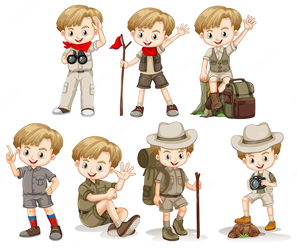

Venue
With its perfect blend of nature, wildlife, and adventure, Currumbin Wildlife Sanctuary promises an unforgettable experience for visitors of all ages.
There is a water park and a dinosaur trail so make sure to pack extra clothing!
To get there, simply search Currumbin Wildlife Sanctuary on your maps. Located at 28 Tomewin St, Currumbin QLD 4223.

Theme & Treats
Blend with the dinosaurs and stay safe by gearing up in a dinosaur costume, paleontologist, or park ranger outfit!
Prizes in store for the best outfit. Our dino chefs will also prepare tasty treats, cake, and drinks for carnivores and herbivores alike! We've got you covered.
If you have allergies or dietary restrictions, please let us know when you RSVP.
Gifts for a Cause
Join us in making a meaningful difference on Roarke's special day. Instead of traditional gifts, we invite you to share the joy by contributing to our donation box. Your generosity will directly support a local children's residential group home,
bringing smiles to children who may not have the opportunity to celebrate their own birthdays
Whether you choose to donate toys, books, clothing, or make a monetary contribution, your gift will create a lasting impact in their lives.
Let's spread the spirit of kindness and make this birthday celebration a source of joy for those who truly need it.
Together, we can make a difference and create unforgettable memories of giving.